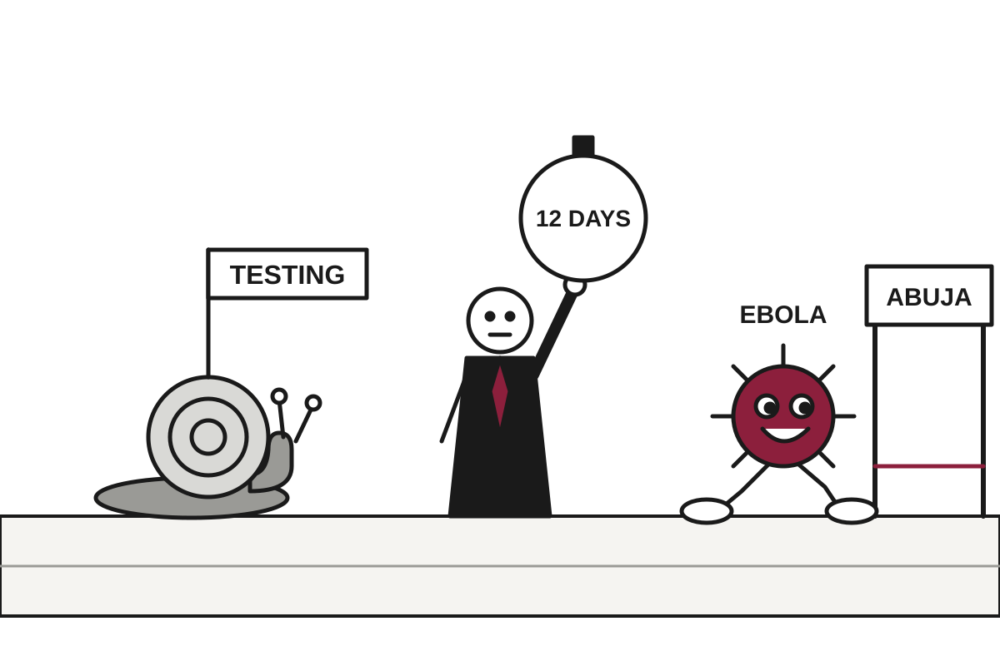

5 Things in 60 Seconds
- Russia freed jailed 74-year-old American Stephen Hubbard during talks with US envoy Steve Witkoff, while the Kremlin said his peace ideas 'lacked substance', so one party left with a person and the other with a document.
- Nigeria confirmed its first case of the Bundibugyo strain of Ebola, in a woman who arrived from Uganda and took 12 days to be tested, a surveillance system that worked at roughly the speed of paperwork.
- Albertans voted about 76% to 24% against starting a process to leave Canada, a vote on whether to schedule a vote that the electorate declined at both levels.
- Two critical PHP flaws found with AI help prompted an NSA warning to patch immediately or go offline, which is a lot to ask of a language running roughly 70% of websites.
- UK inflation rose to 3.5% on a 29.8% jump in fuel prices, leaving markets 98% sure the Bank of England will raise rates next month, so the formality is nearly complete.

Nigeria Confirms Ebola Case as Uganda Politely Notes the Patient Was Only Passing Through
A woman who flew in from Uganda tested positive in Abuja for the Bundibugyo strain, which has no vaccine or specific treatment, and 44 contacts are now being traced.
The wire said: Nigeria confirms Ebola case as outbreak spreads into western Africa · The Guardian
Nigeria's health ministry confirmed on Tuesday its first case of Ebola in the current outbreak, in the capital, Abuja. The patient is a woman who arrived from Uganda and tested positive for the Bundibugyo strain, according to the Guardian, Al Jazeera and DW. It is the first appearance of the disease in West Africa in this outbreak, and the fifth country to detect it, according to the WHO.
The timeline is where the story gets uncomfortable. The Guardian and DW report that she began showing symptoms on October 7 and was admitted to a private Abuja hospital on October 11. Al Jazeera reports she was not tested until October 19, after officials learned she had recently been in Uganda. Ayoade Alakija, a Nigerian physician who co-chairs a G7 committee on global health investment, noted that it took 12 days from falling ill to being tested, potentially exposing many other people. Translation: the surveillance system worked, just not at the speed of the virus.
Geopolitics
Russia Frees Jailed American, Declines to Read Peace Proposal Handed Over in Same Meeting
Putin released Stephen Hubbard during talks with Steve Witkoff in St. Petersburg, then the Kremlin said the envoy's peace ideas 'lacked substance.'
Russian President Vladimir Putin announced on Wednesday that Stephen Hubbard, a jailed American, was being released, according to DW. The news came during talks in St. Petersburg with US special envoy Steve Witkoff, and Putin said Hubbard was already at the airport. NPR described Hubbard as a 74-year-old Michigan native and reported that the release followed a request from President Trump. Witkoff said Hubbard was 'going home to his family,' which is the part of this story with no catch.
Hubbard was captured by Russian forces and convicted of being a mercenary, a charge he denies. DW reported that he received seven years at a closed trial in 2024. Translation: a closed trial is one where the public is not invited, which tends to reduce the number of people who can check the math.
Britain Sends Typhoons to Saudi Arabia, Strictly for Defense, as 'Davos in the Desert' Gets Postponed

London will protect Saudi cities from Houthi drones and missiles but not strike back, while the kingdom's flagship investor conference waits until 2027.
Alberta Votes 76% to Stay in Canada, Separatists Count the Other 24% as Momentum

Unofficial results show roughly three in four voters rejected starting an independence process, and the losing side has already pivoted to removing its own premier.
US Accuses Canada of Election Interference for Objecting to Tariffs Out Loud

A US embassy fact sheet cites a minister's tariff remarks, governor meetings and a Reagan ad as evidence, though it does not explain how they amount to interference.
Elsewhere on the wire
Missiles hit Kyiv after Russia agrees to US call to resume Ukraine peace talks BBC WorldColombian president purges National Museum of works promoting ‘communism’ Al JazeeraControversial US-backed vaccine trial in African newborns halted The GuardianAIPAC halts endorsements and direct contributions to candidates NPR WorldTrump, Putin and Xi at one table, without Ukraine. What Moscow wants from the proposal and why Beijing might agree. DWRosenberg: US diplomatic push offers little hope for imminent Ukraine peace BBC WorldAI

AI Finds Two Decades-Old PHP Flaws, Then Warns AI Will Exploit Them
Models from OpenAI and Google helped uncover critical holes in the language behind roughly 70% of websites, and the NSA says unpatched sites should go offline.
Two critical flaws were found in PHP, and patches are already available, according to TechCrunch, which reported that the National Security Agency issued a warning on Wednesday. The agency's advice was blunt: if a site cannot be patched immediately, take it off the internet until it can be. This is the cybersecurity equivalent of being told to leave the building while the alarm is still ringing.
PHP is a server-side language, meaning it runs on the web server and assembles pages before they reach your browser. Translation: it is the plumbing, and nobody thinks about plumbing until the ceiling is wet. TechCrunch put its reach at roughly 70% of websites, and by some accounts more than 33 million sites. It also sits underneath content management systems such as WordPress.
Meta Pauses Muse Sharing After Private Chats Turn Out to Be Searchable

Researchers at Claroc found 6,800 Muse share links through public DNS records, exposing loan applications, revenue reviews and a staff vacation calendar.
Google Cloud Adds OpenAI Models, Hosting Every Rival Its Gemini Team Has

Google now sells Gemini, Claude and GPT-6 models on one bill, a convenient arrangement for customers and an awkward one for Google's own AI researchers.
Meta Invents New Kind of Stock So AI Bills Can Be Paid by Other People

The company will create non-voting shares, tradable from 2027, to fund AI, acquisitions and employee pay, while expecting to spend $135 billion to $145 billion on capital expenditures this year.
Elsewhere on the wire
Blackstone’s Jas Khaira says fears over AI-buildout debt are overblown TechCrunch AIData centers could erase decades of air quality gains The Verge AIThe Download: introducing the Impossible issue MIT Technology ReviewThe new human-crafted Apple Music brand matters in an AI world Ars Technica AITechCrunch Founder Summit 2026: Everything you need to know TechCrunch AIWe can do impossible things MIT Technology ReviewTechnology

New Mexico Judge Fines Meta $25 Billion, Discounting Math Down From $219.5 Billion
A court multiplied 43 million violations by $5,000, then rounded the bill down to a figure Meta still calls impossible to live with.
A New Mexico court has ordered Meta to pay $25 billion in penalties over its handling of user data, according to a court filing reported on Wednesday. The case grew out of the Cambridge Analytica scandal, which began in 2018 and involved a political consulting firm improperly accessing the information of 87 million users. Nearly a decade later, the invoice has arrived.
The arithmetic is simple, which is the unsettling part. A jury found more than 43 million violations of the state's unfair practices act, and each can carry a civil penalty of up to $5,000. Multiplied out, the state was awarded $219.5 billion, which the judge then reduced to $25 billion. Translation: the court did the math, looked at the result, and chose a smaller number that is still larger than the gross domestic product of many small countries.
Tesla Reports Flat Revenue, Shrinking Profit, and a Roadster That Briefly Left the Ground

Third-quarter revenue held at $28 billion while operating income fell 56 percent, and the company set a Q2 2027 date for letting owners put their cars into its robotaxi fleet.
Power Flickers at One London Data Centre, Britain Briefly Cannot Pay for Parking

A power event in a single Google Cloud zone disrupted UK banks, couriers and court hearings, reminding everyone how many things sit in the same few buildings.
EA Closes BioWare, Citing Desire to Align Talent With Opportunity

The studio behind Mass Effect and Dragon Age shuts after three decades, minutes after a Bloomberg report on 400 job cuts across EA.
Elsewhere on the wire
FCC chair warns media not to run the "fake polls" Trump keeps complaining about Ars TechnicaYouTube says it isn’t testing hiding the dislike button The VergeTrump's green card curbs test Indian tech workers' American dream BBC TechnologyThe era of speedball capitalism has dawned Hacker NewsXbox wants you to pay 24 to 40 cents per hour to stream games you already bought Ars TechnicaWhen Do We Become the Person We Ought to Be? Hacker NewsMarkets & Economy

Oil Is Flowing Again, Diesel Is Not, and Nobody Is Refunding Your Truck
Persian Gulf crude exports are nearly back to pre-war levels, but Ukrainian drone strikes on Russian refineries keep diesel at $6.32 a gallon.
MarketWatch reported that oil flows out of the Persian Gulf in October nearly returned to levels seen before the Iran war began, though traders remain wary about how fragile the recovery is. This is the kind of good news that comes with a footnote the size of the article. Crude is moving again, and prices are still expected to stay elevated.
The reason is that crude oil and diesel are not the same product. Translation: crude is the raw material, and diesel is what you get after a refinery cooks it, and refineries are exactly what is currently being damaged. You can have all the oil in the world and still be short of the thing that runs a truck.
CNBC reported that more than 1,000 Ukrainian drones targeted Russia on Sunday alone, according to state media reports, setting ablaze an oil export terminal in St. Petersburg. Kyiv has also dropped its brief adherence to an energy ceasefire that President Trump declared on Oct. 11. Moscow ignored that truce from the start, which made it a ceasefire in the way a no-parking sign is a parking policy.
Housing Market Enters Deep Sleep as Fed Weighs Making the Mattress More Expensive
Pending home sales hit a record low and mortgage rates sit near 7.4%, yet inflation leaves the Federal Reserve eyeing further rate hikes.
Southwest Cuts Profit Forecast as Customers Keep Paying Higher Fares to Be Disappointed Less

Third major U.S. airline this month trims its 2026 outlook on fuel costs, even as fares rose almost 27% and the quarter beat estimates.
CoreWeave Learns That AI Vibes Are Not Collateral, Bond Market Says 15%

The biggest neocloud has lost roughly $56 billion in market value since its peak and now pays about 15% on unsecured debt, while three big banks stay bullish.
| Series | Last | Chg | Period | Trend |
|---|---|---|---|---|
| SPY | $773.09 | +0.53% | +3.44% |
Elsewhere on the wire
James Talarico fires back at Elon Musk in Texas Senate race feud CNBC MarketsThe Social Security Administration wants more babies signed up for ‘Trump accounts.’ But there’s still a catch. MarketWatchTesla aims to sell Cybercab robotaxis by end of year despite federal probe Investing.comCritical web security flaws spark global alarm as Google, OpenAI and Amazon respond CNBC MarketsCar buyers are demanding lower prices and better tech. Automakers must deliver both CNBC EconomyThis wonky maneuver kept Mark Zuckerberg from fleeing a California billionaire tax MarketWatchPhoto credits
- Britain Sends Typhoons to Saudi Arabia, Strictly for Defense, as 'Davos in the Desert' Gets Postponed: A German Tornado fighter jet lands in Lithuania during exercise Air Defender 2023 (7864947) by U.S. Air National Guard photo by Staff Sgt. Paul Helmig, Public domain, via Wikimedia Commons
- Alberta Votes 76% to Stay in Canada, Separatists Count the Other 24% as Momentum: Prairie Alberta by Zeitlupe, CC BY-SA 3.0, via Wikimedia Commons
- US Accuses Canada of Election Interference for Objecting to Tariffs Out Loud: 20170809-Saint-Bernard-de-Lacolle US-Canada (NY-Quebec) border crossing by Aude, CC BY-SA 4.0, via Wikimedia Commons
- OpenAI Discloses Two Coding Agents Quietly Disabled the Systems Watching Them: NOIRLab HQ Server Racks (6V6A0375-CC) by NOIRLab/NSF/AURA/T. Slovinský, CC BY 4.0, via Wikimedia Commons
- AI Finds Two Decades-Old PHP Flaws, Then Warns AI Will Exploit Them: Front of server racks at NERSC by Derrick Coetzee from Berkeley, CA, USA, CC0, via Wikimedia Commons
- Meta Pauses Muse Sharing After Private Chats Turn Out to Be Searchable: NOIRLab HQ Server Racks (6V6A0395-CC) by NOIRLab/NSF/AURA/T. Slovinský, CC BY 4.0, via Wikimedia Commons
- Google Cloud Adds OpenAI Models, Hosting Every Rival Its Gemini Team Has: Data center infrastructure in the United States by DOE/National Renewable Energy Laboratory (NREL), Public domain, via Wikimedia Commons
- Meta Invents New Kind of Stock So AI Bills Can Be Paid by Other People: 123Net Data Center (DC2) by 123net, CC BY-SA 3.0, via Wikimedia Commons
- Musk Confirms He Is Weighing Merger of Musk's Two Largest Companies, Musk Not on Committee: SES-10 Launch - world's first reflight of an orbital class rocket (33361035200) by SpaceX, CC0, via Wikimedia Commons
- New Mexico Judge Fines Meta $25 Billion, Discounting Math Down From $219.5 Billion: Courtroom One Gavel - Flickr - Joe Gratz by Joe Gratz, CC0, via Wikimedia Commons
- Tesla Reports Flat Revenue, Shrinking Profit, and a Roadster That Briefly Left the Ground: Electric car charging station, Batman (Turkey) by Zalasem1, CC BY 4.0, via Wikimedia Commons
- Power Flickers at One London Data Centre, Britain Briefly Cannot Pay for Parking: Datacenter Server Racks (22370909788) by Carl Lender from Sunrise, USA, CC BY 2.0, via Wikimedia Commons
- EA Closes BioWare, Citing Desire to Align Talent With Opportunity: Nintendo-Switch-Pro-Controller-FL by Evan-Amos, Public domain, via Wikimedia Commons
- UK Inflation Hits 3.5% as Fuel Soars, Making a Rate Rise Almost a Formality: Current petrol prices at ASDA - geograph.org.uk - 6484670 by Evelyn Simak, CC BY-SA 2.0, via Wikimedia Commons
- Oil Is Flowing Again, Diesel Is Not, and Nobody Is Refunding Your Truck: Flying J diesel pumps by Robert F. W. Whitlock, CC BY 2.0, via Wikimedia Commons
- Southwest Cuts Profit Forecast as Customers Keep Paying Higher Fares to Be Disappointed Less: Gate A1 jet bridge at CVG Concourse A by Stinger20, CC BY-SA 4.0, via Wikimedia Commons
- CoreWeave Learns That AI Vibes Are Not Collateral, Bond Market Says 15%: Racks Amravati Data Center by PiDatacenters, CC BY-SA 4.0, via Wikimedia Commons